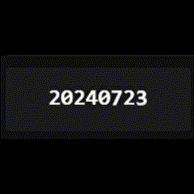

MAS.Controls 通用控件
INotificationService
通知
NotificationService
行为：
- Step 1: 定义 Host Control: 通知内容控件作为面包通知的指定容器
<ContentControl x:Name="NotificationHost"/>
- Step 2: 服务初始化和方法实现
private readonly INotificationService _notificationService;
private void ShowNotification(string message) {
_notificationService.Show(message, NotificationHost);
}
信息：

NumberAnimation
数字动画
ChartsNumberAnimationControl
行为：
- Step 1: 引入命名空间
xmlns:naControl ="clr-namespace:DataMaster.Modules.MAS.Controls.NumberAnimation"
- Step 2: 实例化
ChartsNumberAnimationControl并绑定至ViewModel属性
<naControl:ChartsNumberAnimationControl Number="{Binding CurrentNumber}"/>
- Step 3: 实现ViewMode
private int _currentNumber;
public int CurrentNumber {
get => _currentNumber;
set => SetField(ref _currentNumber, value, nameof(CurrentNumber));
}
信息：
